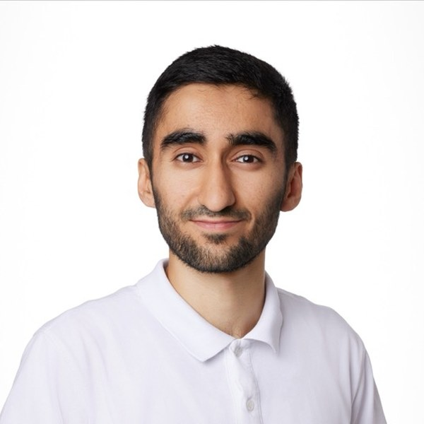

Muharrem Akdemir
Informatiker EFZ — Fachrichtung Applikationsentwicklung
Application Support · Application Management · IoT & Workplace
Mail ma.akd@proton.me
Tel 078 447 91 43
Ort Region Bern, CH
Web architect-dna.ch
Profil
Praxisorientierter Informatiker EFZ mit solider Full-Stack-Erfahrung aus der Ausbildung bei der Mobiliar (Microservices, B2E-Software, Mobile App) und anschliessender Tätigkeit als Application Engineer bei Blaser Swisslube (Automatisierung geschäftskritischer Belegprozesse via Lasernet). Kombiniert technisches Tiefenverständnis mit ausgeprägter Lösungsorientierung und Macher-Mentalität. Berufsbegleitende BM2 an der WKS Bern (laufend seit Sommer 2026). Verfügbar ab sofort für Application Support / Application Management (max. 60%).
Berufserfahrung
Telefonbefrager für Marktstudien
Sept 2025 — Feb 2026
M.I.S. Trend, Bern
- Durchführung verlässlicher, standardisierter Befragungen für nationale Studien (u. a. MACH)
- Professionelle, empathische Kommunikation am Telefon und präzise Datenerfassung unter Zeitdruck
- Hohes Mass an Selbständigkeit und Zuverlässigkeit in der Repräsentation des Unternehmens
KommunikationDatenerfassungSelbständigkeit
Application Engineer — Lasernet Spezialist
Okt 2024 — März 2025
Blaser Swisslube AG, Hasle-Rüegsau
- Technische Betreuung und Weiterentwicklung des Dokumenten-I/O-Management-Systems (Lasernet) für den automatisierten Rechnungs- und Belegfluss
- Sicherstellung der fehlerfreien Verarbeitung und Verteilung geschäftskritischer Enterprise-Output-Prozesse
- Eigenständige Programmierung erster Komponenten; anschliessend starke Einbindung in Konzept- und Abstimmungsarbeiten ausserhalb des Fachbereichs
LasernetDokumenten-I/OEnterprise OutputProzessautomatisierung
Arbeitsverhältnis im gegenseitigen Einvernehmen per Ende März 2025 aufgelöst (gesundheitliche Stabilisierung).
Berufliche Neuorientierung
April — Aug 2025
Bewerbungsphase und Aufbau einer selbstständigen Tätigkeit
- Aktive Stellensuche im IT-Bereich
- Aufbau eines eigenen Produktportfolios (architect-dna.ch)
- Bewältigung einer familiären Krisensituation
StellensucheProduktportfolioSelbstständigkeit
Mitarbeiter Gastronomie & Service
März — Sept 2024
Tasty Bites
- Herzliche Gästebetreuung und speditiver Service in einem dynamischen Betrieb
- Verantwortung für Kassenführung, Abrechnungen und Einhaltung von Qualitätsstandards
- Multitasking und bewährte Belastbarkeit in hektischen Peak-Zeiten
KundenkontaktKassenführungBelastbarkeit
Eigene Projekte (Open Source) — seit April 2026, laufend
Eigenständige Konzeption, Entwicklung und Betrieb eines wachsenden Produktportfolios. Aufbau der BIMP B-Infrastruktur mit über 30 Mini-Tools während eines stationären Aufenthalts (Ende Februar bis 2. April 2026), anschliessend laufende Weiterentwicklung und vollständiges UX/UI-Redesign in Zusammenarbeit mit Claude Code.
Einspruch
Einsprache-Briefvorlage für die Schweiz (Krankenkasse, Vermieter, Behörden) mit korrekten Gesetzesartikeln (KVG, OR, ATSG).
einspruch.architect-dna.ch
Anchor
Persönlicher AI-Begleiter mit täglicher Reflexion und Notfall-Modus.
architect-dna.ch/anchor
LIA
Zero-Knowledge-verschlüsselter Rechtsdokumenten-Tresor für iOS.
architect-dna.ch/lia
Zugcafé
Spontane Begegnungen in der Nähe, ohne Account.
architect-dna.ch/zugcafe
VOID FREQ
Fokus-Studio mit Ambient-Sound (Brown Noise, Rain, Lo-fi, Binaural).
architect-dna.ch/freq
Sovereignty
Täglicher Feed von Denkfehlern und Prinzipien.
architect-dna.ch/sovereignty
Globus
Chrome-Extension, die Lesezeichen als begehbare Weltkugel darstellt.
architect-dna.ch/globus
DORA
Lernwerkzeug-Prototyp: Active Recall, Mikro-Lektionen, verteilte Wiederholung.
architect-dna-ch.github.io/dora
Technologien
IT & Workplace Support
First- & Second-Level-Support
Windows 10/11
Client-Management
Hardware- & Software-Konfiguration
Microsoft 365 (M365)
Development & Cloud
Full-Stack Development
Microservices
API-Anbindungen
Deployment via Railway / Vercel
Systemarchitektur
Git
Automatisierung & AI-Tools
Soft Skills
Lösungsorientierung (Macher-Mentalität)
Hohe Belastbarkeit im Multitasking
Kommunikation im multikulturellen Umfeld
Dienstleistungsorientierung
Ausbildung
Berufsmaturität 2 (BMS 2) — Wirtschaft & Dienstleistungen
seit Sommer 2026
WKS KV Bildung, Bern
- Berufsbegleitendes Modell (Teilzeit), vereinbar mit einem Pensum bis max. 60%
Informatiker EFZ — Fachrichtung Applikationsentwicklung
2019 — 2023
Die Mobiliar / GIBB Bern
- Entwicklung von Microservices in modernem Enterprise-Umfeld
- B2E-Software zur internen Effizienzsteigerung
- Mobile-App-Projekt im Lernenden-Team (End-to-End)
- Systemarchitektur, API-Anbindungen, Datenbankdesign, Agile Work
Sprachen
DeutschMuttersprache
KurdischMuttersprache
EnglischGute Kenntnisse
Interessen
Piano
Zeichnen
Interior Design (Fusion Style)
Open-Source-Projekte